Introduciamo un'ulteriore operazione tra vettori, il prodotto scalare, che a una coppi di vettori assegnati associa un numero reale. La definizione che proponiamo, data in termini delle com ponenti de due vettori assegnati, può sembrare a prima vista un po' priva di senso, ma invece, è lo strumeto giusto per avere informazioni gemetriche sulla posizione reciproca tra vettori (cfr. teo. xx).
In analytic plane geometry, the basic tasks are measuring lenghts and angles; everything else depends on them. The basic tools for these tasks is the dot product.
Definition 2.2.1. Il prodotto scalare canonico ⟨⋅,⋅ ⟩: ℝn x ℝn ⟶ ℝ su ℝn è la funzione defined as
⟨v, w⟩ = v ⋅ w = ∑ni=1viwi = v1w1 + ... + vnwn
per ogni v = (v1, ..., vn), w = (w1, ..., wn) ∈ ℝn. □
The dot product is also written as v ⋅ w, hence the name. Yet another notation for the dot product is vTw, the matrix multiplication of vT and w, which is also a number identified with the 1 x 1 matrix vTw.
We have the equivalent notations
⟨v, w⟩ ≡ v ⋅ w ≡ vTw
Esempio 2.2.2. If u = (1, −2, 4) and v = (3, 0, 2), their dot product is
However, the commutative property of the dot product x ⋅ y = y ⋅ x yields
‖x + cy‖2 = ‖x‖2 + 2cx ⋅ y + c2 ‖y‖2 (2.2.5)
We now set c = −‖x‖2/(x ⋅ y) to obtain
‖x + cy‖2 = −‖x‖2 + (‖x‖4 ‖y‖2)/|x ⋅ y|2
where we used the fact that (x ⋅ y)2 = |x ⋅ y|2. As ‖x + cy‖2 is nonnegative, this result is equivalent to
−‖x‖2 + (‖x‖4 ‖y‖2)/|x ⋅ y|2 ≥ 0
Cancelling the nonnegative number ‖x‖2, which leaves the inequality sign unchanged, rearranging the terms and taking the square root of the reamaining nonnegative result on each side of the inequality yields the Cauchy-Schwarz inequality. □
With the Cauchy-Schwarz inequality we can easily prove the triangle inequality.
Proposition 2.2.6 (The triangle inequality). Let x,y ∈ ℝn, then
‖x + y‖ ≤ ‖x‖ + ‖y‖
Proof. We start from the result (2.2.5) and set c = 1 which yields
‖x + cy‖2 = ‖x‖2 + x ⋅ y + ‖y‖2
As x ⋅ y may be either positive or negative, x ⋅ y ≤ |x ⋅ y|, so making use of the Cauchy-Schwaz inequality shows that
taking the square root of each side of this inequality, yields the triangle inequality. □
Let v1, v2, and w ∈ ℝn and let λ ∈ ℝ. Then
additività rispetto alla prima variabile: ⟨v1 + v2, w⟩ = ⟨v1, w⟩ + ⟨v2, w⟩;
omogeneità rispetto alla prima variabile: ⟨λv, w⟩ = λ⟨v, w⟩;
additività rispetto alla seconda variabile: ⟨v , w1 + v2⟩ = ⟨v1, w1⟩ + ⟨v, w2⟩;
omogeneità rispetto alla seconda variabile: ⟨v, λw⟩ = λ⟨v, w⟩ .
simmetria: ⟨v, w⟩ = ⟨w, v⟩
il prodotto scalare è non degenere: ⟨v, w⟩ = 0 per ogni w ∈ ℝn se e solo se v = 0;
il prodotto scalare è definito positivo: per tutti i v ∈ ℝn con v ≠ 0 si ha ⟨v, w⟩ > 0;
|⟨v, w⟩| ≤ ‖v‖ ‖w‖ (Disuguaglianza di Cauchy-Schwarz);
Le proprietà (a)-(b) si riassumono dicendo che il prodotto scalare canonico è lineare rispetto alla prima variabile; le (c),(d) dicendo che è lineare rispetto alla seconda variabile; tutte e quatto dicendo che è bilineare. So the dot product is a bi-linear, symmetric, and positive map.
Angoli tra vettori
To find the angle between two vectors we need to use the cosine rule from trigonometry.
a2 = b2 + c2 − 2bc cos θ

Consider two non-zero vectors u = (u1, u2) and v = (v1, v2) ∈ ℝ2. By applying the above cosine rule to this triangle we have
With this relation we can project vector v onto vector u, tale vettore prende il nome di proiezione ortogonale di v su u

Proiezione del vettore v sul vettore u.
Dot product on ℂn
The dot product on ℂn is defined by
v̄ · w = v̄1w1 + ··· + v̄nwn
The following proposition shows that the dot product satisfies the properties of linearity, symmetry, and positivity.
Proposition 1.9.5 The dot product on ℝn satisfies the following properties for all v, w, u ∈ ℝn and all α ∈ ℝ.
v · (w + u) = v · w + v · u and v · (αw) = α(v · w) (linearity)
v · w = w · v (symmetry)
v · v > 0 for all v ≠ 0 (positivity)
Proof. Using the Einstein summation convention
v · (w + u) = vi (w + u)i = vi(wi + ui) = vi wi + vi ui = v · w + v · u
v · (αw) = vi (αw)i = αviwi = α(v · w)
v · w = vi wi = wi vi = w · v
(v, v) = Σivi2 > 0 for v ≠ 0.
Slightly more generally, we saw in the last section, we can use the norm induced by the inner product to measure length in any inner product space.
Definition 7.4.3. (Norm Induced by the Inner Product) Suppose that V is an inner product space. Then the norm induced by the inner product is the function ‖·‖ : V → ℝ defined by
When V = ℝn or V = ℂn and the inner product is just the usual dot product.